Getting Started with ZRG3M
Getting Started with AWS IoT
In this guide, we will show you how to build AWS IoT management system based on H/W root of trust for enhanced security: interact with Internet of Things, collect and process telemetry from devices or control devices remotely while protecting sensitive information in hardware format. Uplink and downlink messages are available on AWS IOT MQTT, allowing you to leverage Amazon services such as storing messages in DynamoDB, invoke Lambda functions and many more.
About ZRG3M
The ZRG3M is a Wi-Fi/BLE module that consists of the MT7697 Wi-Fi/ BLE combo chip and G3 security chip. This module includes 2.4 GHz chip antenna, Clock sources and all RF components.
Set up the ZRG3M Evaluation board
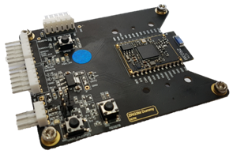
Prerequisite Hardware
The Following items are required before you can make connections:
1. Standard ZRG3M Kit ( To obtain this kit, please contact us from ICTK support site )
- ZRG3M Evaluation board
- Two USB to UART board
- 5-pin wire Harness
- 3-pin wire Harness
2. Two USB cable
3. A computer running Windows 7or 10 operating system
4. Wi-Fi network
Hardware setup
Connect your host computer to ZRG3M
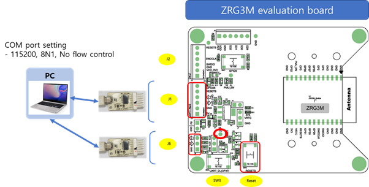
Set Up Your Development Environment
To communicate with your board, you need to download and install a firmware and configure board with python scripts.
Download and install Flash tool (MTK lab) and firmware
1. To set up your environment, please download MT76X7 Flashtool. Install them on your host computer.
*MaxOS and Linux is not supported
2. Download the latest firmware along with build application for your convenience. Re-locate or copy these four files in the IoT Flashtool folder you downloaded above.
build.bat
Flash.bat
3. Modify Flash.bat with the correct path.
• Flash.bat
- set comport
COMXX
- Set the correct path for LE-201124C.bin
C:\XXXXXX\LE-201124C.bin
4. To set the board at download mode, please do the following.
a. Locate the DL(download) and RST(reset) buttons on the board as shown below.
b. Press ad hold the onboard DL and RST button together.
c. Release the RST button while holding DL button.
d. Release the DL button.
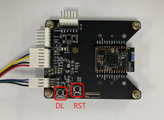
5. Run Flash.bat
Command prompt window shown below will appear when running Flash.bat. Do not stop it while in progress. After post-download action is completed, the window will disappear automatically.
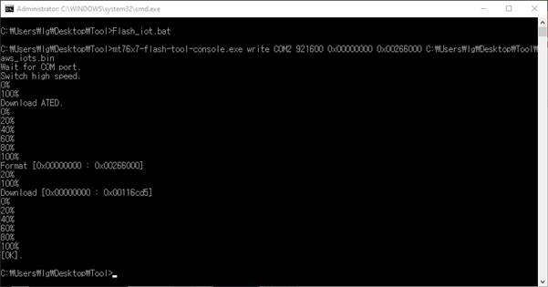
Connect to AWS IoT Core with MQTT and TLS
*
Implementation is based on MQTT version 3.1.1 and TLS 1.2 with
ECDHE_ECDSA_WITH_AES_128_GCM_SHA256 ciphersuite.
*
private key and certificates are encrypted in HW-based security chip, supports
enhanced secured working structure.
* ZRG3M provides TRNG (True Random Number Generator) for best security. When the MCU performs TRNG Read through I/O ports, it reads 32-bit value.
Prerequisites
• CA certificate
• A client certificate
• A client private key
ZRG3M support ECC but not RSA. Please prepare your own ECC certificate and key to connect AWS IoT. Please use this guide to create your own ECC certificates : Create ECC certificate guide
Connect to AWS IoT Core
1. Log in to the AWS Management Console
2. Choose IoT Core service
3. In the left navigation pane, click on Manage/Things
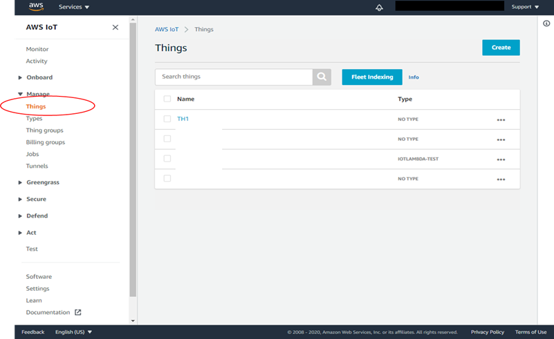
4. Click on Create button and give your device a name and press Create
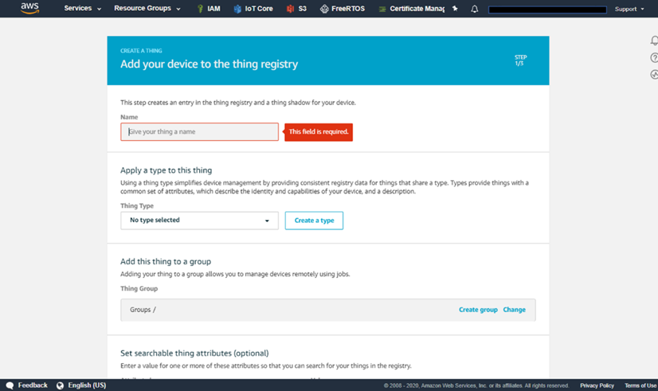
5. On the Certificate page, choose Use my certificate.
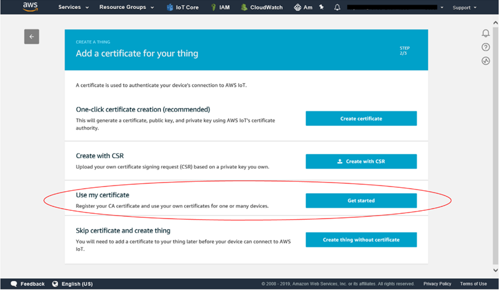
6. Register a CA certificate for your own certificate to register
Refer to
https://docs.aws.amazon.com/iot/latest/developerguide/register-CA-cert.html
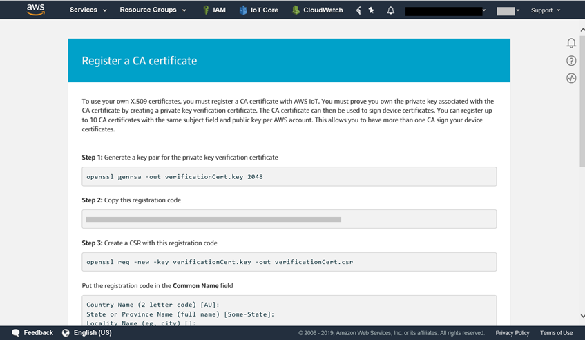
7. Upload your own certificate
To Register your certificate, refer to
https://docs.aws.amazon.com/iot/latest/developerguide/manual-cert-registration.html
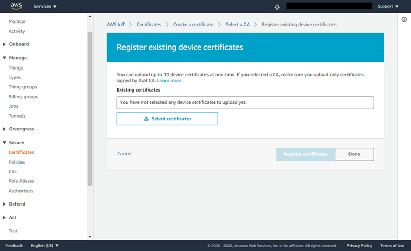
8. In the left navigation pane, choose Policies under Secure menu
9. Click on the Create button and define a policy.
NOTE: The specific permission policies can vary for your use cases. For non-dev environments, all devices in your fleet must have credentials with privileges that authorize intended actions only, which include (but not limited to) AWS IoT MQTT actions such as publishing messages or subscribing to topics with specific scope and context. Identify the permission policies that best meet your business and security requirements.
For sample policies, refer to https://docs.aws.amazon.com/iot/latest/developerguide/example-iot-policies.html. Also refer to https://docs.aws.amazon.com/iot/latest/developerguide/security-best-practices.html.
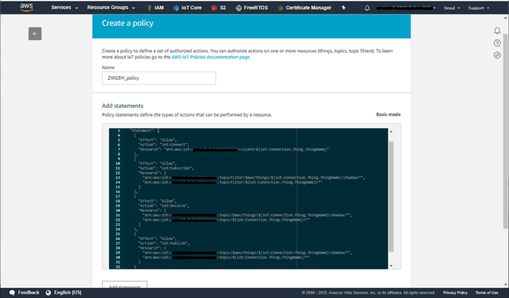
< policy statements>
{
"Version": "2012-10-17",
"Statement": [
{
"Effect": "Allow",
"Action": "iot:Connect",
"Resource": "arn:aws:iot:XXXXX:client/${iot:Connection.Thing.ThingName}"
},
{
"Effect": "Allow",
"Action": "iot:Subscribe",
"Resource": [
"arn:aws:iot: XXXXX:topicfilter/$aws/things/${iot:Connection.Thing.ThingName}/shadow/*",
"arn:aws:iot: XXXXX:topicfilter/${iot:Connection.Thing.ThingName}/*"
]
},
{
"Effect": "Allow",
"Action": "iot:Receive",
"Resource": [
"arn:aws:iot: XXXXX:topic/$aws/things/${iot:Connection.Thing.ThingName}/shadow/*",
"arn:aws:iot: XXXXX:topic/${iot:Connection.Thing.ThingName}/*"
]
},
{
"Effect": "Allow",
"Action": "iot:Publish",
"Resource": [
"arn:aws:iot: XXXXX:topic/$aws/things/${iot:Connection.Thing.ThingName}/shadow/*",
"arn:aws:iot: XXXXX:topic/${iot:Connection.Thing.ThingName}/*"
]
}
]
}
Choose Create. You will see a message indicating that the policy has been created successfully.
10. Go to the certificates page, click on the three dots of your certificate and attach the policy you just created to the certificate. Please make sure the status of the certificate is ' Active '.
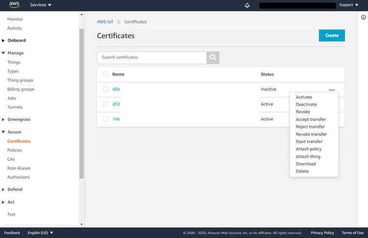
Setting up the ZRG3M device
This Python scripts allow users to set Wi-Fi information and application specific settings in order to connect the board with the AWS IoT.
1. Download all python scripts from the ICTK GitHub repository to a zrg3m-py folder.
2. Use this guide to provision the certificate to ZRG3M: getting started-provisioning certificate guide
3. Modify wifi.json and aws.json files in zrg3m-py folder according to your settings.
Please have your aws_host_url, thing name and client ID ready to configure your device. Use port number as 8883 for secure-MQTT protocol.
User can find aws_host_url from the AWS IoT Console. Click the Settings at the left pane. Please make a copy of the Custom endpoint and use it as aws_host_url.
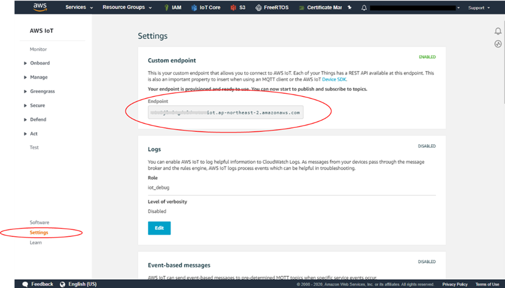
wifi.json
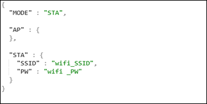
aws.json
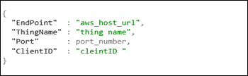
4. Run zrg3m_configuration.py to configure settings of your device.
Available serial port will be shown in python shell window. Once user selects the serial port for the ZRG3M, it will be stored in json file name 'zrg3m.json'.
configuration process
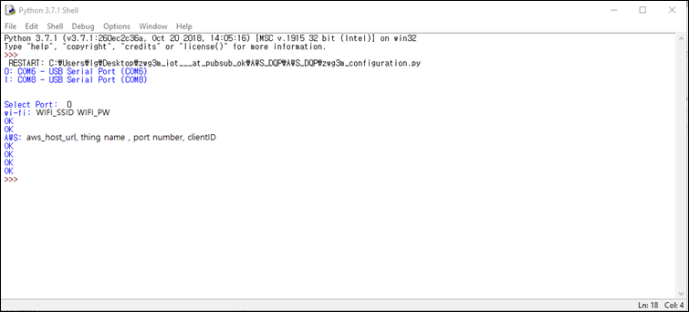
Wi-Fi and AWS setting that was written on json files will be configured. You will see six 'OK' messages when configuration is successful. If 'fail' message appears during the configuration, run zrg3m_configuration.py again.
Please reset the board after the configuration.
MQTT Test: Publish/Subscribe
To verify connectivity to AWS IoT, ZRG3M can publish and subscribe messages to user specific topics using python scripts: zrg3m_publish.py , zrg3m_subscribe.py.
Publish Messages
1. Modify pub.json with your topic, QoS and payload
pub.json
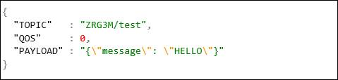
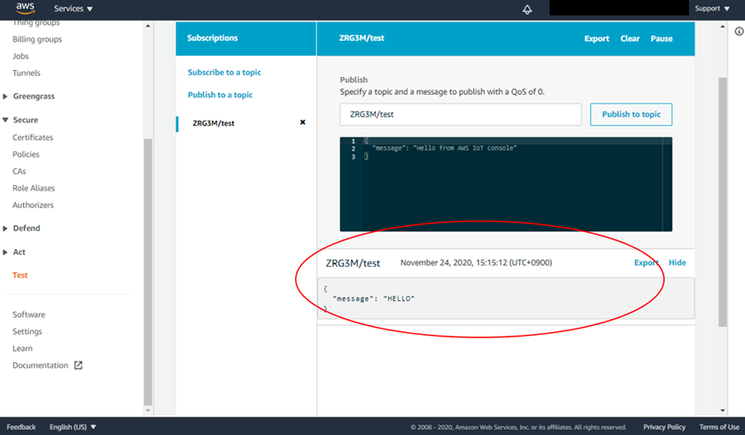
For topics, refer to
https://docs.aws.amazon.com/iot/latest/developerguide/topics.html
QoS (Quality of Service): The quality of service defaults to QoS 0. You can use either QoS 0 or QoS 1. For more information about QoS support in AWS IoT, see the documentation.
2. Run zrg3m_publish.py for publish from the device and zrg3m_susbscribe.py for subscribing.
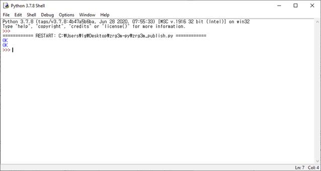
3. Using AWS IoT device shadow, users can also update and get shadow information with amazon reserved shadow topics. Please modify your pub.json so ZRG3M can publish messages to thing shadow. To create a complete topic, replace thingname with the name of your device.
For shadow usage, refer to https://docs.aws.amazon.com/iot/latest/developerguide/iot-device-shadows.html
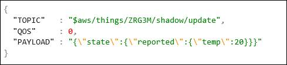
4. Run zrg3m_publish.py to publish. Updated shadow states as in pub.json will be shown in thing's Shadow State.
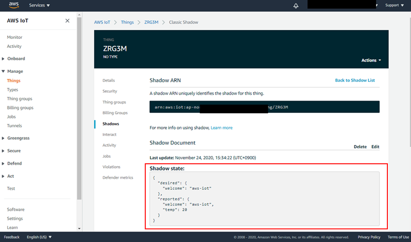
Subscribe Messages
1. Modify sub.json with your topic, QoS and payload. To create a complete topic, replace thingname with the name of your device.
sub.json
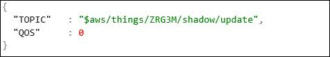
2. Run zrg3m_subscribe.py for subscribing.
3. To publish MQTT messages from the MQTT client, sign in to the AWS IoT console.
4. In the left navigation pane, choose Test and then choose MQTT test clients to open the MQTT client.
5. On the MQTT client page, in the Publish section, in the Specify a topic and a message to publish field, enter the topic name of your message. In this example, use ZRG3M/test.
6. In the message payload window, enter the following json:
{
"desired": {"temp":20}
}
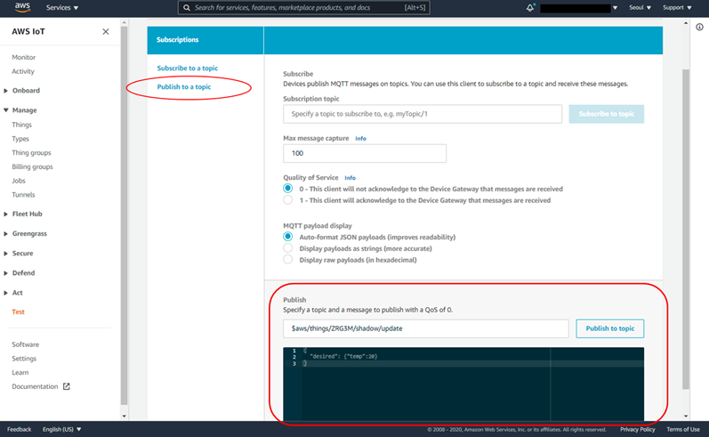
7. By publishing MQTT message using amazon console, topic and payload will be shown in python shell as below.
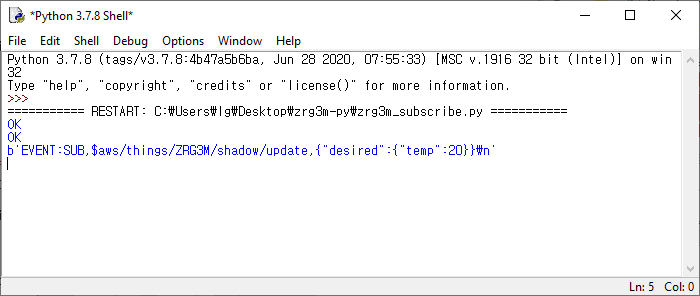
Device Shadow: Update/Delta
ZRG3M publishes updates and display delta using python scripts: zrg3m_update.py , zrg3m_delta.py.
Update shadows
ZRG3M publishes updates to the AWS IoT Device Shadow using python code provided.
1. Modify update.json with your input.
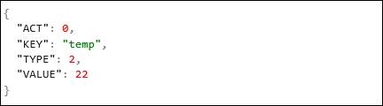
The parameter information for shadow update is as below.
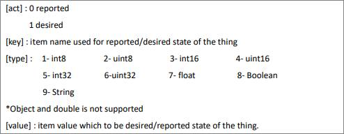
For shadow document examples, refer to:
2. Run zrg3m_update.py. Python shell will display successful execution of shadow updates. You can also observe updated shadow values on your AWS console, thing's shadow state.
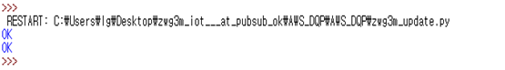
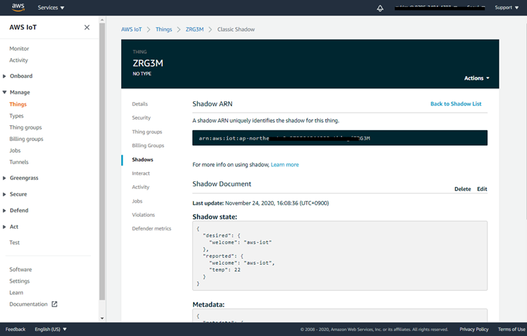
Delta
Delta in shadows are useful indicator which contains difference between the desired and reported states. This will not show on shadow if desired and reported states are the same or there is no desired part in Thing shadow. Running zrg3m-delta.py script will report delta states of the item when it triggers with delta.
For more information about delta, refer to:
https://docs.aws.amazon.com/iot/latest/developerguide/device-shadow-document.html#delta-state
Below is the example of running the delta function in python. Please modify 'update.json' file with your key and type before running delta function.
Run zrg3m-delta.py. It will return item with desired states.
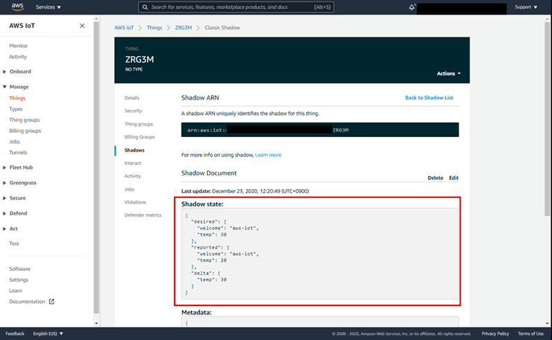
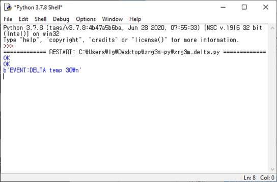
Troubleshooting
Download fail
If you encounter errors while downloading firmware, check the comport number and path in Flash.bat. Please make sure the board is at download mode with step below.
1. Press and hold the DL and RST button together
2. Release the RST button while holding DL button.
3. Release the DL button
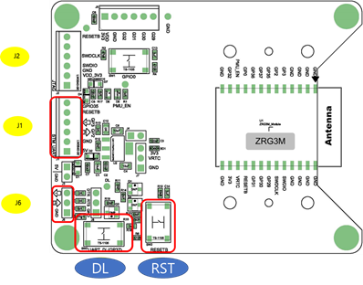
Connection fail
Be sure to configure AWS IoT to connect your device to the AWS Cloud. You can use below steps to check the device settings.
1. Connect the device with host computer
2. Open terminal program (ex. hterm)
3. Check settings using AT command set . Make sure all the configurations are set correctly.
ex) AT+AWS_EP ? +AWS_EP: your_host_url
AT+AWS_TN? +AWS_TN : your thing name
AT+WIFI_SSID_STA? +WIFI_SSID_STA : your Wi-Fi ID
AT+WIFI_PW_STA? +WIFI_PW_STA : your Wi-Fi password
If these steps don't work, please contact zn@ictk.com.